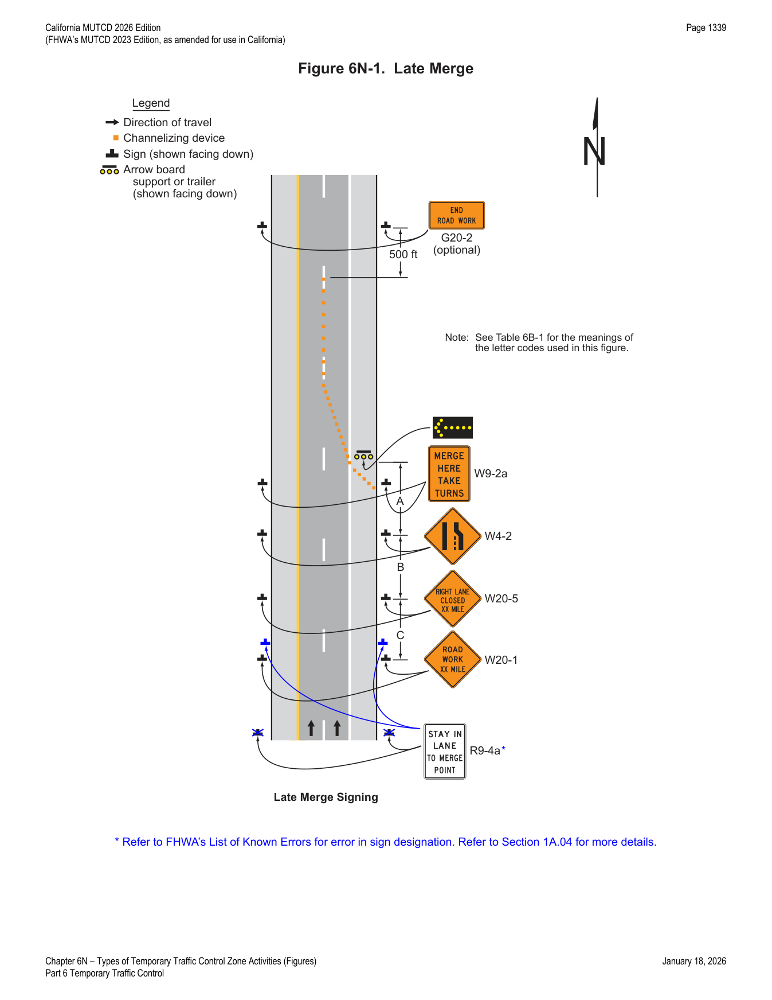

Part 6 · Temporary Traffic Control · Chapter 6N
Types of Temporary Traffic Control Zone Activities
The organizing framework for TTC planning: work-duration categories, work location relative to the traveled way, modifications for special needs, and location-specific guidance spanning shoulders, medians, two-lane highways, urban streets, multi-lane highways, intersections, freeways/expressways, crossovers, interchanges, grade crossings, nighttime work, and the Late Merge strategy.
6N.01Work Duration
- 01Work duration is a major factor in determining the number and types of devices used in TTC zones. The duration of a TTC zone is defined relative to the length of time a work operation occupies a spot location.
- 02The five categories of work duration and their time at a location shall be defined as follows: (A) long-term stationary is work that occupies a location more than 3 days; (B) intermediate-term stationary is work that occupies a location more than one daylight period up to 3 days, or nighttime work lasting more than 1 hour; (C) short-term stationary is daytime work that occupies a location for more than 1 hour within a single daylight period; (D) short duration is work that occupies a location up to 1 hour; (E) mobile is work that moves intermittently or continuously.
- 03At long-term stationary TTC zones, there is ample time to install and realize benefits from the full range of TTC procedures and devices that are available for use. Larger channelizing devices, temporary roadways, and temporary traffic barriers are frequently used.
- 04Since long-term operations extend into nighttime, retroreflective and/or illuminated devices shall be used in long-term stationary TTC zones.
- 05In intermediate-term stationary TTC zones, it might not be feasible or practical to use procedures or devices that would be desirable for long-term stationary TTC zones, such as altered pavement markings, temporary traffic barriers, and temporary roadways. The increased time to place and remove these devices in some cases could significantly lengthen the project, thus increasing exposure time.
- 06Since intermediate-term operations extend into nighttime, retroreflective and/or illuminated devices shall be used in intermediate-term stationary TTC zones.
- 07Most maintenance and utility operations are short-term stationary work.
- 08As compared to stationary operations, mobile and short-duration operations are activities that might involve different treatments. Devices having greater mobility might be necessary such as signs mounted on trucks. Devices that are larger, more imposing, or more visible can be used effectively and economically. The mobility of the TTC zone is important.
- 09Safety in short-duration or mobile operations should not be compromised by using fewer devices simply because the operation will frequently change its location.
- 10During short-duration work, it often takes longer to set up and remove the TTC zone than to perform the work. Workers face hazards in setting up and taking down the TTC zone. Also, since the work time is short, delays affecting road users are significantly increased when additional devices are installed and removed.
- 11Considering these factors, simplified control procedures may be warranted for short-duration work. A reduction in the number of devices may be offset by the use of other more dominant devices such as high-intensity rotating, flashing, oscillating, or strobe lights on work vehicles.
- 12Mobile operations often involve frequent short stops for activities such as litter cleanup, pothole patching, or utility operations, and are similar to short-duration operations.
- 13Flags and/or channelizing devices may additionally be used and moved periodically to keep them near the mobile work area.
- 14Flaggers may be used for mobile operations that often involve frequent short stops.
- 15Mobile operations also include work activities where workers and equipment move along the road without stopping, usually at slow speeds. The advance warning area moves with the work area.
- 16When mobile operations are being performed, a shadow vehicle equipped with an arrow board or a sign should follow the work vehicle, especially when vehicular traffic speeds or volumes are high. Where feasible, warning signs should be placed along the roadway and moved periodically as work progresses.
- 17To avoid high-volume conditions, consideration should be given to scheduling mobile operations work during off-peak hours.
- 18If there are mobile operations on a high-speed travel lane of a multi-lane divided highway, arrow boards and/or Portable Changeable Message Signs should be used.
- 19Mobile operations shall have appropriate devices on the equipment (that is, high-intensity rotating, flashing, oscillating, or strobe lights, signs, or special lighting), or shall use a separate vehicle with appropriate warning devices. Although vehicle hazard warning lights are permitted to be used to supplement high-intensity rotating, flashing, oscillating, or strobe lights, they shall not be used instead of these devices.
- 20For mobile operations that move at speeds of less than 3 mph, mobile signs or stationary signing that is periodically retrieved and repositioned in the advance warning area may be used.
- 21A rolling roadblock is a method of TTC used to slow or stop traffic as a means of temporarily removing traffic from a roadway segment downstream of the road block. The rolling roadblock closes all lanes of traffic by using pacing vehicles to create a gap so that construction activities can be performed. Rolling roadblocks are used where long-term road closures using TTC devices are not needed. A rolling roadblock consists of one blocking/pacing vehicle per lane of traffic, a clearing vehicle, and an advance warning vehicle. The rolling roadblock is normally performed by law enforcement officers during off-peak hours.
In practice, work duration is the master variable that drives almost every other TTC decision downstream — it is why this section opens the chapter. The five categories (long-term >3 days; intermediate 1 daylight period up to 3 days or >1 hour at night; short-term >1 hour in a single daylight period; short duration ≤1 hour; mobile) are the vocabulary used throughout the rest of Part 6.
6N.02Location of Work
- 01Chapter 6C and Sections 6M.04 and 6N.04 contain additional information regarding the steps to follow when pedestrian or bicycle facilities are affected by the worksite.
- 02The choice of TTC needed for a TTC zone depends upon where the work is located. As a general rule, the closer the work is to road users (including bicyclists and pedestrians), the greater the number of TTC devices that are needed. Procedures are described later in this Chapter for establishing TTC zones in the following locations: (A) outside the shoulder, (B) on the shoulder with no encroachment, (C) on the shoulder with minor encroachment, (D) within the median, and (E) within the traveled way.
- 03When the work space is within the traveled way, except for short-duration and mobile operations, advance warning shall provide a general message that work is taking place and shall supply information about highway conditions. TTC devices shall clearly delineate the path roadway users are to follow through the TTC zone.
6N.03Modifications To Fulfill Special Needs
- 01The typical applications in Chapter 6P illustrate commonly encountered situations in which TTC devices are employed.
- 02Other devices may be added to supplement the devices provided in the typical applications, and device spacing may be adjusted to provide additional reaction time. When conditions are less complex than those depicted in the typical applications, fewer devices may be needed.
- 03When conditions are more complex, typical applications should be modified by giving particular attention to the provisions set forth in Chapter 6A and by incorporating appropriate devices and practices from the following list: (A) Additional devices: signs; arrow boards; more channelizing devices at closer spacing (see Section 6M.04 for information regarding detectable edging for pedestrians); temporary raised pavement markers; high-level warning devices; portable changeable message signs; temporary traffic control signals (including accessible pedestrian signals where not otherwise required); temporary traffic barriers; crash cushions; screens; rumble strips; more delineation. (B) Upgrading of devices: a full complement of standard pavement markings; brighter and/or wider pavement markings; larger and/or brighter signs; channelizing devices with greater conspicuity; temporary traffic barriers in place of channelizing devices. (C) Improved geometrics at detours or crossovers. (D) Increased distances: longer advance warning area; longer tapers. (E) Lighting: temporary roadway lighting; steady-burn lights used with channelizing devices; flashing lights for isolated hazards; illuminated signs; floodlights. (F) Pedestrian routes and temporary facilities. (G) Bicycle diversions and temporary facilities.
In practice, this menu of upgrades (A-G) is the checklist an engineer works through when a typical application from Chapter 6P doesn't quite fit the site's actual complexity — the point is not to invent a new layout but to add/upgrade from this catalog while keeping the same underlying typical-application structure.
6N.04Work Affecting Pedestrian and Bicycle Facilities
- 01It is not uncommon, particularly in urban areas, that road work and the associated TTC will affect existing pedestrian or bicycle facilities. It is essential that the needs of all road users, including pedestrians with disabilities, are considered in TTC zones.
- 02In addition to specific provisions identified in Sections 6N.05 through 6N.13, there are a number of provisions that might be applicable for all of the types of activities identified in this Chapter.
- 03Where pedestrian or bicyclist usage is high, the typical applications should be modified by giving particular attention to the provisions set forth in Chapter 6C, this Chapter, Sections 6K.02 and 6M.04, and in other Sections of Part 6 related to accessibility and detectability provisions in TTC zones.
- 04Pedestrians should be separated from the worksite by appropriate devices that maintain the accessibility and detectability for pedestrians with disabilities.
- 05Bicyclists and pedestrians should not be exposed to unprotected excavations, open utility access, overhanging equipment, or other such conditions.
- 06Except for short duration and mobile operations, when a highway shoulder is occupied, a SHOULDER WORK (W21-5) sign, a SHOULDER CLOSED C30A(CA) sign, or other similar signs should be placed in advance of the activity area. When work is performed on a paved shoulder 8 feet or more in width, channelizing devices should be placed on a taper having a length that conforms to the requirements of a shoulder taper. Signs should be placed such that they do not narrow any existing pedestrian passages to less than 48 inches.
- 06aRefer to FHWA's List of Known Errors for an error in Paragraph 6 text. Refer to Section 1A.04 for more details.
- 06bWhen existing accommodations for bicycle travel are disrupted or closed in a long-term duration project (refer to Section 6N.01), information and devices contained in Figures 6P-19(CA), 6P-47 through 6P-51(CA), and 6P-101(CA), as appropriate per situation encountered, should be used in order to replicate existing conditions for the needs and control of bicyclists through a TTC zone.
- 06cExcept for short durations and mobile operations, when a highway shoulder is occupied and bicyclists would be sharing a lane with vehicular traffic as a result of the TTC zone, a combination of Bicycle Crossing (W11-1) and IN ROAD (W16-1P) plaque should be placed in advance of the activity area. When work is performed on a paved shoulder 8 feet or more in width, channelizing devices should be placed on a taper having a length that conforms to the requirements of a shoulder taper. Signs should be placed such that they do not block the bicyclist's path of travel and they do not narrow any existing pedestrian passages to less than 48 inches.
- 07Pedestrian detours should be avoided since pedestrians rarely observe them and the cost of providing accessibility and detectability might outweigh the cost of maintaining a continuous route. Whenever possible, work should be done in a manner that does not create a need to detour pedestrians from existing routes or crossings.
- 08Where pedestrian routes are closed, alternate pedestrian routes shall be provided.
- 09When existing pedestrian facilities are disrupted, closed, or relocated in a TTC zone, the temporary facilities shall be detectable and shall include accessibility features consistent with the features present in the existing pedestrian facility.
- 09bIf establishing or maintaining an alternate pedestrian route is not feasible during the project, an alternate means of providing for pedestrians may be used, such as adding free bus service around the project or assigning a person the responsibility to assist pedestrians with disabilities through the project limits. Refer to Section 6C.02 for details.
- 10The continuity of a bikeway should be maintained through the TTC zone if practical.
- 11The continuity of a bikeway through the TTC zone is particularly important where bicyclists have been traveling on a shoulder, bicycle lane, or shared-use path adjacent to a general-purpose lane (having a speed limit greater than or equal to 35 miles per hour) and there would be a significant safety concern if bicyclists were to share that general-purpose lane through the TTC zone.
- 12On roadways which are not bikeways but where bicyclists (when present) typically share lanes with motor vehicle traffic, the TTC plan and Typical Applications for general traffic will usually be adequate for bicyclists as well.
- 13In order to maintain room for bicycle lanes through the TTC zone on a multi-lane roadway, one or more travel lanes could be closed.
- 14If a bikeway detour is unavoidable, it should be as short and direct as practical.
- 15On-road bicyclists should not be directed onto a path or sidewalk intended for pedestrian use except where such a path or sidewalk is a shared-use path, or where no practical alternative is available (such as might be the case on a bridge in the course of a rehabilitation project).
- 16If a portion of a bikeway is to be closed due to construction activities and the detoured bikeway follows a complex path not in the original bikeway corridor, then a full detour plan should be developed and implemented. The TTC for the detour of the bikeway should include all necessary advance warning (W21 series) signs, detour (W4-9 series) signs, and any other TTC devices necessary to guide bicyclists along the detour route.
- 18If an on-street bikeway had a wide travel lane or lanes in which bicyclists traveled side by side with motor vehicles prior to construction, and construction activities reduce the lane width(s) to less than 14 feet through the TTC zone, then the BICYCLISTS ALLOWED USE OF FULL LANE (R9-20) sign may be used.
- 19The minimum TTC sign and plaque sizes for shared-use paths shall conform to those shown in Table 9A-1. The minimum TTC sign and plaque sizes for on-street bikeways shall conform to Chapters 6G, 6H, and 6I.
In practice, pedestrian detours are a last resort under this section — the preferred approach is to keep the existing route continuous and accessible, and only when that is genuinely infeasible does the manual permit alternate accommodations like free shuttle service or an assigned pedestrian-assistance attendant.
6N.05Work Outside of the Shoulder
- 01When work is being performed beyond the shoulders, but within the right-of-way, little or no TTC might be needed. TTC generally is not needed where work is confined to an area 15 feet or more from the edge of the traveled way. However, TTC is appropriate where distracting situations exist, such as vehicles parked on the shoulder, vehicles accessing the worksite via the highway, and equipment traveling on or crossing the roadway to perform the work operations (for example, mowing). A typical application for work beyond the shoulder is shown in Figure 6P-1.
- 02Where the situations described in Paragraph 1 of this Section exist, a single warning sign, such as ROAD WORK AHEAD (W20-1) or Workers (W21-1) sign, should be used. If the equipment travels on the roadway, the equipment should be equipped with appropriate flags, high-intensity rotating, flashing, oscillating, or strobe lights, and/or a SLOW MOVING VEHICLE (W21-4) sign.
- 03If work vehicles are on the shoulder, a SHOULDER WORK (W21-5) sign should be used.
- 04A general warning sign like ROAD MACHINERY AHEAD (W21-3) should be used if workers and equipment must occasionally move onto the shoulder.
- 05For mowing operations, the sign MOWING AHEAD (W21-8) may be used.
- 06Where the activity is spread out over a distance of more than 2 miles, the SHOULDER WORK (W21-5) sign may be repeated every 1 mile.
- 07A supplementary plaque with the message NEXT XX MILES (W7-3aP) may be used.
6N.06Work on the Shoulder with No Encroachment
- 01The provisions of this Section apply to short-term through long-term stationary operations.
- 02When paved shoulders having a width of 8 feet or more are closed, at least one advance warning sign shall be used. In addition, channelizing devices shall be used to close the shoulder in advance to delineate the beginning of the work space and direct motor vehicle traffic to remain within the traveled way.
- 03When paved shoulders having a width of 8 feet or more are closed on freeways and expressways, road users should be warned about potential disabled vehicles that cannot get off the traveled way. An initial general warning sign, such as ROAD WORK AHEAD (W20-1), should be used, followed by a RIGHT or LEFT SHOULDER CLOSED (W21-5a) sign. Where the downstream end of the shoulder closure extends beyond the distance that can be perceived by road users, a supplementary plaque bearing the message NEXT XX FEET (W16-4P) or MILES (W7-3aP) should be placed below the SHOULDER CLOSED (W21-5a) sign. On multi-lane, divided highways, signs advising of shoulder work or the condition of the shoulder should be placed only on the side of the affected shoulder.
- 04When an improved shoulder is closed on a high-speed roadway, it should be treated as a closure of a portion of the road system because road users expect to be able to use it in emergencies. Road users should be given ample advance warning that shoulders are closed for use as refuge areas throughout a specified length of the approaching TTC zone. The sign(s) should read SHOULDER CLOSED (W21-5a) with distances indicated. The work space on the shoulder should be closed off by a taper of channelizing devices with a length of 1/3 L using the formulas in Tables 6B-3, 6B-3(CA) and 6B-4.
- 05When the shoulder is not occupied but work has adversely affected its condition, the LOW SHOULDER (W8-9) or SOFT SHOULDER (W8-4) sign should be used, as appropriate.
- 06Where the condition extends over a distance in excess of 1 mile, the sign should be repeated at 1-mile intervals.
- 07In addition, a supplementary plaque bearing the message NEXT XX MILES (W7-3aP) may be used.
- 08Temporary traffic barriers might be needed to inhibit encroachment of errant vehicles into the work space and to protect workers.
- 09When used for shoulder work, arrow boards shall operate only in the caution mode.
6N.07Work on the Shoulder with Minor Encroachment
- 01Chapter 6C and Sections 6M.04 and 6N.04 contain additional information regarding the steps to follow when pedestrian or bicycle facilities are affected by the worksite.
- 02When work takes up part of a lane, vehicular traffic volumes, vehicle mix (buses, trucks, cars, and bicycles), speed, and capacity should be analyzed to determine whether the affected lane should be closed. Unless the lane encroachment permits a remaining lane width of 10 feet, the lane should be closed.
- 03Truck off-tracking should be considered when determining whether the minimum lane width of 10 feet is adequate.
- 04Except on State highways, a lane width of 9 feet may be used for short-term stationary work on low-volume, low-speed roadways when vehicular traffic does not include longer and wider heavy commercial vehicles.
- 05Figure 6P-6 illustrates a method for handling vehicular traffic where the stationary or short-duration work space encroaches slightly into the traveled way.
6N.08Work Within the Median
- 01Chapter 6C and Sections 6M.04 and 6N.04 contain additional information regarding the steps to follow when pedestrian or bicycle facilities are affected by the worksite.
- 02If work in the median of a divided highway is within 15 feet from the edge of the traveled way for either direction of travel, TTC should be used through the use of advance warning signs and channelizing devices.
6N.09Work Within the Traveled Way of a Two-Lane Highway
- 01Chapter 6C and Sections 6M.04 and 6N.04 contain additional information regarding the steps to follow when pedestrian or bicycle facilities are affected by the worksite.
- 02Detour signs are used to direct road users onto another roadway. At diversions, road users are directed onto a temporary roadway or alignment placed within or adjacent to the right-of-way. Typical applications for detouring or diverting road users on two-lane highways are shown in Figures 6P-7, 6P-8, and 6P-9. Figure 6P-7 illustrates the controls around an area where a section of roadway has been closed and a diversion has been constructed. Channelizing devices and pavement markings are used to indicate the transition to the temporary roadway.
- 03When a detour is long, Detour (M4-8, M4-9) signs should be installed to remind and reassure road users periodically that they are still successfully following the detour.
- 04When an entire roadway is closed, as illustrated in Figure 6P-8, a detour should be provided and road users should be warned in advance of the closure, which in this example is a closure 10 miles from the intersection. If local road users are allowed to use the roadway up to the closure, the ROAD CLOSED AHEAD, LOCAL TRAFFIC ONLY (R11-3a) sign should be used. The portion of the road open to local road users should have adequate signing, marking, and delineation.
- 05Detours should be signed so that road users will be able to traverse the entire detour route and back to the original roadway as shown in Figure 6P-9.
- 06Techniques for controlling vehicular traffic under one-lane, two-way conditions are described in Section 6E.01.
- 10Refer to CVC § 21363 for detour signs.
6N.10Work Within the Traveled Way of an Urban Street
- 01Chapter 6C and Sections 6M.04 and 6N.04 contain additional information regarding the steps to follow when pedestrian or bicycle facilities are affected by the worksite.
- 02In urban TTC zones, decisions are needed on how to control vehicular traffic, such as how many lanes are required, whether any turns need to be prohibited at intersections, and how to maintain access to business, industrial, and residential areas.
- 03Pedestrian traffic needs separate attention. Chapter 6C contains information regarding pedestrian movements near TTC zones.
- 04If the TTC zone affects the movement of bicyclists, adequate access to the roadway or shared-use paths shall be provided (see Part 9).
- 05Where transit stops are affected or relocated because of work activity, both pedestrian and vehicular access to the affected or relocated transit stops shall be provided.
- 06If a designated bicycle route is closed because of the work being done, a signed alternate route should be provided. Bicyclists should not be directed onto the path used by pedestrians.
- 07Worksites within the intersection should be protected against inadvertent pedestrian incursion by providing detectable channelizing devices.
- 08Utility work takes place both within and outside the roadway to construct and maintain services such as power, gas, light, water, or telecommunications. Operations often involve intersections, since that is where many of the network junctions occur. The work force is usually small, only a few vehicles are involved, and the number and types of TTC devices placed in the TTC zone is usually minimal.
- 09As discussed under short-duration projects, however, the reduced number of devices in utility TTC zones should be offset by the use of high-visibility devices, such as high-intensity rotating, flashing, oscillating, or strobe lights on work vehicles or high-level warning devices.
6N.11Work Within the Traveled Way of a Multi-Lane, Non-Access Controlled Highway
- 01Chapter 6C and Sections 6M.04 and 6N.04 contain additional information regarding the steps to follow when pedestrian or bicycle facilities are affected by the worksite.
- 02Work on multi-lane (two or more lanes of moving motor vehicle traffic in one direction) highways is divided into right-lane closures, left-lane closures, interior-lane closures, multiple-lane closures, and closures on five-lane roadways.
- 03When a lane is closed on a multi-lane road for other than a mobile operation, a transition area containing a merging taper shall be used.
- 04When justified by an engineering study, temporary traffic barriers (see Section 6K.09) should be used to prevent incursions of errant vehicles into hazardous areas or work space.
- 05Figure 6P-34 illustrates a lane closure in which temporary traffic barriers are used.
- 06When the right-hand lane is closed, TTC similar to that shown in Figure 6P-33 may be used for undivided or divided four-lane roads.
- 07If morning and evening peak hour vehicular traffic volumes in the two directions are uneven and the greater volume is on the side where the work is being done in the right-hand lane, consideration should be given to closing the inside lane for opposing vehicular traffic and making the lane available to the side with heavier vehicular traffic, as shown in Figure 6P-31.
- 08If the larger vehicular traffic volume changes to the opposite direction at a different time of the day, the TTC should be changed to allow two lanes for opposing vehicular traffic by moving the devices from the opposing lane to the center line. When it is necessary to create a temporary center line that is not consistent with the pavement markings, channelizing devices should be used and closely spaced.
- 09When closing a left-hand lane on a multi-lane undivided road, as vehicular traffic flow permits, the two interior lanes may be closed, as shown in Figure 6P-30, to provide drivers and workers additional lateral clearance and to provide access to the work space.
- 10When only the left-hand lane is closed on undivided roads, channelizing devices shall be placed along the center line as well as along the adjacent lane.
- 11When an interior lane is closed, an adjacent lane should also be considered for closure to provide additional space for vehicles and materials and to facilitate the movement of equipment within the work space.
- 12When multiple lanes in one direction are closed, a capacity analysis should be made to determine the number of lanes needed to accommodate motor vehicle traffic needs. Vehicular traffic should be moved over one lane at a time. As shown in Figure 6P-37, the tapers should be separated by a distance of 2L, with L being determined by the formulas in Tables 6B-3, 6B-3(CA) and 6B-4.
- 13If operating speeds are 40 mph or less and the space approaching the work area does not permit moving traffic over one lane at a time, a single continuous taper may be used.
- 14When a directional roadway is closed, inapplicable WRONG WAY signs and markings, and other existing traffic control devices at intersections within the temporary two-lane, two-way operations section shall be covered, removed, or obliterated.
- 15When half the road is closed on an undivided highway, both directions of vehicular traffic may be accommodated as shown in Figure 6P-32. When both interior lanes are closed, temporary traffic controls may be used as provided in Figure 6P-30. When a roadway must be closed on a divided highway, a median crossover may be used (see Section 6N.15).
6N.12Work Within the Traveled Way at an Intersection
- 01Chapter 6C and Sections 6M.04 and 6N.04 contain additional information regarding the steps to follow when pedestrian or bicycle facilities are affected by the worksite.
- 02The typical applications for intersections are classified according to the location of the work space with respect to the intersection area (as defined by the extension of the curb or edge lines). The three classifications are near side, far side, and in-the-intersection. Work spaces often extend into more than one portion of the intersection. For example, work in one quadrant often creates a near-side work space on one street and a far-side work space on the cross street. In such instances, an appropriate TTC plan is obtained by combining features shown in two or more of the intersection and pedestrian typical applications.
- 03TTC zones in the vicinity of intersections might block movements and interfere with normal road user flows. Such conflicts frequently occur at more complex signalized intersections having such features as traffic signal heads over particular lanes, lanes allocated to specific movements, multiple signal phases, signal detectors for actuated control, and accessible pedestrian signals and detectors.
- 04The effect of the work upon signal operation should be considered, and temporary corrective actions should be taken, if necessary, such as revising signal phasing and/or timing to provide adequate capacity, maintaining or adjusting signal detectors, and relocating signal heads to provide adequate visibility as described in Part 4.
- 05When work will occur near an intersection where operational, capacity, or pedestrian accessibility problems are anticipated, the highway agency having jurisdiction shall be contacted.
- 06For work at an intersection, advance warning signs, devices, and markings should be used on all cross streets, as appropriate. The typical applications depict urban intersections on arterial streets. Where the posted speed limit, the off-peak 85th-percentile speed prior to the work starting, or the anticipated speed exceeds 40 mph, additional warning signs should be used in the advance warning area.
- 07Pedestrian crossings near TTC sites should be separated from the worksite by appropriate barriers that maintain the accessibility and detectability for pedestrians with disabilities.
- 08Near-side work spaces, as depicted in Figure 6P-21, are simply handled as a midblock lane closure. A problem that might occur with near-side lane closure is a reduction in capacity, which during certain hours of operation could result in congestion and back-ups.
- 09When near-side work spaces are used, a mandatory turn lane may be used for through vehicular traffic.
- 10Where space is restricted in advance of near-side work spaces, as with short block spacings, two warning signs may be used in the advance warning area, and a third action-type warning or a regulatory sign (such as Keep Left) may be placed within the transition area.
- 12When a lane through an intersection must be closed on the far side, it should also be closed on the near-side approach to preclude merging movements within the intersection.
- 13If there are a significant number of vehicles turning from a near-side lane that is closed on the far side, the near-side lane may be converted to a mandatory turn lane.
- 15If the work is within the intersection, any of the following strategies may be used: (A) a small work space so that road users can move around it, as shown in Figure 6P-26; (B) flaggers or uniformed law enforcement officers to direct road users, as shown in Figures 6P-27 and 6P-52; (C) work in stages so the work space is kept to a minimum; and (D) road closures or upstream diversions to reduce road user volumes.
- 16Depending on road user conditions, a flagger(s) and/or a uniformed law enforcement officer(s) should be used to control road users.
6N.13Work Within the Traveled Way of a Freeway or Expressway
- 01Special conditions encountered where vehicular traffic must be moved through or around TTC zones on high-speed, high-volume roadways can pose challenges to the TTC. Although the general principles outlined in other Sections of this Manual are applicable to all types of highways, high-speed, access-controlled highways need special planning and attention in order to accommodate vehicular traffic while also protecting road users and workers. The traffic volumes, vehicle mix (buses, trucks, cars, and bicycles, if permitted), and speed of vehicles on these facilities require that careful TTC procedures be implemented, for example, to induce critical merging maneuvers well in advance of work spaces and in a manner that creates minimum turbulence and delay in the vehicular traffic stream.
- 02When the roadway capacity is reduced as a result of lane closures, the demand might exceed the available capacity and result in either a lengthy stopped or slow moving queue of vehicles that might extend past the normal signs used in the typical advance warning area.
- 03An assessment of the expected queue length should be a part of the TTC plan design process and adjustments to the sign spacing and number of signs as well as the possibility of using more conspicuous devices should be considered to increase the distance and conspicuity of the advance warning area.
- 04One strategy often employed to mitigate the extended queue issue is to work during off peak hours or at night. When the work is limited to night hours, increased use of warning lights, illumination of work spaces, and intelligent advance warning systems might be necessary.
- 05TTC for a typical lane closure where a queue is not anticipated to accumulate on a divided highway is shown in Figures 6P-33 and 6P-34. Temporary traffic controls for short duration and mobile operations on freeways are shown in Figure 6P-35. A typical application for shifting vehicular traffic lanes around a work space is shown in Figures 6P-36 and 6P-36(CA). TTC for multiple and interior lane closures on a freeway is shown in Figures 6P-37 and 6P-38. Refer to Caltrans' Standard Plan T10, T10A; refer to Section 1A.05 for information regarding this publication.
- 07The temporary traffic controls for short duration and mobile operations on State highways are shown in Caltrans' Standard Plans T15, T16 and T17.
- 08A typical layout of closing lanes to direct traffic around a workspace is shown in Caltrans' Standard Plans T10 through T14.
- 09Refer to Section 1A.05 for information regarding this publication.
6N.14Two-Lane, Two-Way Traffic on One Roadway of a Normally Divided Highway
- 01Two-lane, two-way operation on one roadway of a normally divided highway is a typical procedure that requires special consideration in the planning, design, and work phases, because unique operational problems (for example, increasing the risk of head-on crashes) can arise with the two-lane, two-way operation.
- 02When two-lane, two-way traffic control must be maintained on one roadway of a normally divided highway, opposing vehicular traffic shall be separated with either temporary traffic barriers (concrete safety-shape or approved alternate), channelizing devices, Narrow Two-Way Traffic (W6-4) signs on flexible supports (see Section 6H.17), or a temporary raised island throughout the length of the two-way operation. The use of markings and complementary signing, by themselves, shall not be used.
- 03Figure 6P-39 shows the procedure for two-lane, two-way operation. Treatments for entrance and exit ramps within the two-way roadway segment of this type of work are shown in Figures 6P-40 and 6P-41.
- 04A temporary traffic control zone in the entrance and exit ramps may be handled as shown in Caltrans' Standard Plans T10 and T14. Refer to Section 1A.05 for information regarding this publication.
In practice, Paragraph 02 sets a hard floor: pavement markings and signing alone are never sufficient to separate opposing traffic on a two-lane, two-way crossover section — a physical/visual separation (barrier, channelizing devices, W6-4 flexible-post signs, or a raised island) is mandatory the entire length of the operation.
6N.15Crossovers
- 01The following are considered good guiding principles for the design of crossovers: (A) tapers for lane drops should be separated from the crossovers, as shown in Figure 6P-39; (B) crossovers should be designed for speeds no lower than 10 mph below the posted speed, the off-peak 85th-percentile speed prior to the work starting, or the anticipated operating speed of the roadway, unless unusual site conditions require that a lower design speed be used; (C) a good array of channelizing devices, delineators, and full-length, properly placed pavement markings should be used to provide drivers with a clearly defined travel path; (D) the design of the crossover should accommodate all vehicular traffic, including trucks and buses.
- 02Temporary traffic barriers and the excessive use of TTC devices cannot compensate for poor geometric and roadway cross-section design of crossovers.
6N.16Interchanges
- 01Access to interchange ramps on limited-access highways should be maintained even if the work space is in the lane adjacent to the ramps. Access to exit ramps should be clearly marked and delineated with channelizing devices. For long-term projects, conflicting pavement markings should be removed and new ones placed. Early coordination with officials having jurisdiction over the affected cross streets and providing emergency services should occur before ramp closings.
- 02If access is not possible, ramps may be closed by using signs and Type 3 Barricades. As the work space changes, the access area may be changed, as shown in Figure 6P-42. A TTC zone in the exit ramp may be handled as shown in Figure 6P-43.
- 03When a work space interferes with an entrance ramp, a lane may need to be closed on the freeway (see Figure 6P-44). A TTC zone in the entrance ramp may require shifting ramp vehicular traffic (see Figure 6P-44).
- 04A temporary traffic control zone in the entrance and exit ramps may be handled as shown in Caltrans' Standard Plans T10 and T14. Refer to Section 1A.05 for information regarding this publication.
6N.17Work in the Vicinity of a Grade Crossing
- 01When grade crossings exist either within or in the vicinity of a TTC zone, lane restrictions, flagging, or other operations shall not create conditions where vehicles can be queued across the tracks. If the queuing of vehicles across the tracks cannot be avoided, a uniformed law enforcement officer or flagger shall be provided at the crossing to prevent vehicles from stopping on the tracks, even if automatic warning devices are in place.
- 02Figure 6P-46 shows work in the vicinity of a grade crossing.
- 03Section 8A.13 contains additional information regarding TTC zones in the vicinity of grade crossings.
- 04Early coordination with the railroad company or transit agency should occur before work starts.
6N.18Work During Nighttime Hours
- 01Section 6A.05 contains additional information regarding considerations for conducting work operations during nighttime hours.
- 02Considering the safety issues inherent to night work, consideration should be given to enhancing traffic controls (see Section 6N.03) to provide added visibility and driver guidance, and increased protection for workers.
- 03In addition to the enhancements listed in Section 6N.03, consideration should be given to providing additional lights and retroreflective markings to workers, work vehicles, and equipment.
- 04Where reduced traffic volumes at night make it feasible, the entire roadway may be closed by detouring traffic to alternate facilities, thus removing the traffic risk from the activity area.
- 05Consideration should be given to stationing uniformed law enforcement officers and lighted patrol cars at night work locations where there is a concern that high speeds or impaired drivers might result in undue risks for workers or other drivers.
- 06Except in emergencies, temporary lighting shall be provided at all flagger stations used during nighttime work.
- 06aRefer to Construction Safety Order in the California Code of Regulations (Title 8, Division 1, Chapter 4, Subchapter 4, Article 11, § 1599 - Flaggers). See Section 1A.05 for information regarding this publication.
- 07Desired illumination levels vary depending upon the nature of the task involved. An average horizontal luminance of 5 foot candles can be adequate for general activities. An average horizontal luminance of 10 foot candles can be adequate for general activities and activities around equipment. Tasks requiring high levels of precision and extreme care can require an average horizontal luminance of 20 foot candles.
- 08Highway construction work lighting shall be as per Construction Safety Order 1523 (California Code of Regulations Title 8, Division 1, Chapter 4, Subchapter 4, Article 3, § 1523 - Illumination). See Section 1A.05 for information regarding this publication.
6N.19Late Merge
- 01The Late Merge is designed to use all available lanes until the merge point is reached at the lane closure taper rather than merging as soon as possible into the open lane. The Late Merge addresses many of the challenges that are associated with traffic operations in advance of lane closures at TTC zones such as queue length, capacity, and driver satisfaction.
- 02Late Merge systems may consist of static or portable changeable message signs.
- 03Static Late Merge signing should consist of the STAY IN LANE TO MERGE POINT (R9-4a) sign to be within the work zone or advance warning area and the MERGE HERE TAKE TURNS (W9-2a) sign (see Figure 6N-1).
- 03aRefer to FHWA's List of Known Errors for an error in Paragraph 3 text. Refer to Section 1A.04 for more details.
- 04The following messages may be used on changeable message signs at an upstream location during the Late Merge application: "STAY IN YOUR LANE/MERGE AHEAD"; "STAY IN YOUR LANE/MERGE AHEAD XX MILES"; "USE BOTH LANES/TO MERGE POINT"; "USE BOTH LANES/STOPPED TRAFFIC AHEAD"; "SLOW TRAFFIC AHEAD/USE BOTH LANES".
- 05The following messages are typically used on changeable message signs at the merge point during the Late Merge application: "TAKE YOUR TURN/MERGE HERE"; "MERGE HERE/TAKE TURNS".

In practice, Late Merge is a deliberate reversal of driver instinct: instead of "merge early" messaging, it keeps both lanes flowing to the taper and formalizes zipper merging with the STAY IN LANE TO MERGE POINT (R9-4a) and MERGE HERE TAKE TURNS (W9-2a) signs — proven in research to reduce total queue length compared to conventional early-merge signing.
★ Key Takeaways — Chapter 6N
- Work duration drives device selection: long-term stationary (>3 days), intermediate-term stationary (>1 daylight period to 3 days, or >1 hour at night), short-term stationary (>1 hour in one daylight period), short duration (≤1 hour), and mobile (moves intermittently/continuously) — long- and intermediate-term operations both require retroreflective/illuminated devices since they extend into nighttime.
- Work location (outside shoulder, on shoulder with/without encroachment, median, traveled way) sets the baseline TTC intensity — closer to road users means more devices.
- Lane encroachment: unless a remaining 10-foot lane width is preserved, the lane must be closed (9-foot minimum permitted only off State highways, for short-term low-volume/low-speed work without heavy trucks).
- Two-lane, two-way operation on a normally-divided highway requires physical separation (barrier, channelizing devices, W6-4 signs, or raised island) throughout — pavement markings and signing alone are never sufficient.
- Grade crossings: TTC operations must never allow vehicles to queue across tracks; if unavoidable, a flagger or uniformed officer must be stationed at the crossing even with automatic warning devices present.
- Night work requires temporary lighting at all flagger stations (except emergencies) and Construction Safety Order 1523-compliant illumination, generally 5-20 foot-candles depending on task precision.
- Late Merge (R9-4a + W9-2a signing, Figure 6N-1) keeps both lanes flowing to the taper and formalizes a "take turns" zipper merge instead of conventional early-merge messaging.